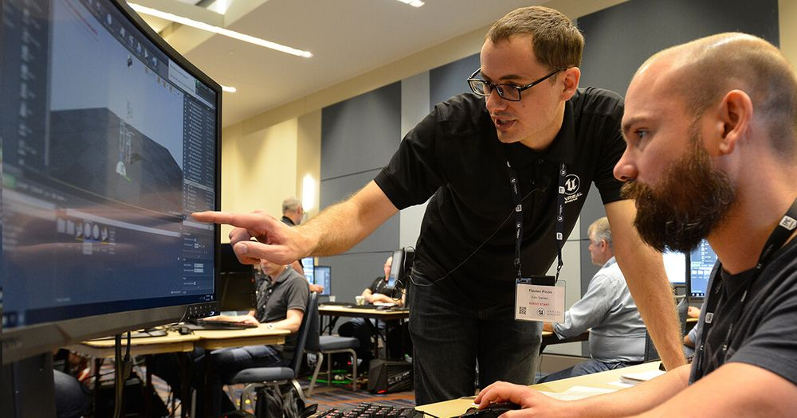

Our Objective
For Skillers And Job Seekers
Well directed career guidance programs for educational institutions Appropriate certification courses that suit the industry need Train the trainers; expanded awareness about the current industry standards Liaise with corporates to offer niche internships Establish technology development centers in colleges Specialised incubation centers in collaboration with corporates
Mission
Guarentee In Finding Efficient Professionals
MARTBRIDGE is an edTech organization with a vision to bridge the gap between academia & industry. Our outcome-based experiential learning programs on emerging technologies (Internet of Things, Machine Learning, Data Science, Artificial Intelligence, Robotics) are building skilled entry - level engineers, for the corporate world. .
Vision
Striving Towards Successful Career
The Internet-based recruiting platforms become a primary recruitment channel in most companies. While such platforms decrease the recruitment time and advertisement cost, they suffer from an inappropriateness of traditional information retrieval techniques like the Boolean search methods. Consequently, a vast amount of candidates missed the opportunity of recruiting. The recommender system technology aims to help users in finding items that match their personnel interests; it has a successful usage in e-commerce applications to deal with problems related to information overload efficiently. In order to improve the e-recruiting functionality, many recommender system approaches have been proposed. This article will present a survey of e-recruiting process and existing recommendation approaches for building personalized recommender systems for candidates/job matching.


Contact Us
Email - abcd@gmail.com
LinkedIn - https://www.linkedin.com/login
GitHub - https://www.linkedin.com/login
Know About Us
A job matching model is designed to match jobs to relevant individuals, removing the tiresome need for a manual search. The job recommender should evaluate a person's suitability for jobs and come up with surgical results with a list of users based on their target skillset and other pre-defined parameters.We are experts in finding such minds.....
Trending today...
Infosys hired 100+ skillers across India
Demand for web developers is on hike
Angular Beats React?...
Highest Paid Job - Management Consulting

Full Stack Web Development - Organizer Of The World
Jobs In Japan - TITP Where Skill==Job
Top Companies Are Hiring Now...UI/UX designers create and iterate end to end user experiences. Use the following job description template when hiring your next UI/ UX Designer and customize it further based on your specific requirements.
Become A Coder Genius... The two primary skills of coders - expression and problem-solving. Above all, you need to be able to come up with creative solutions to abstract problems.
AI is running out of computing power. IBM says the answer is this new chip